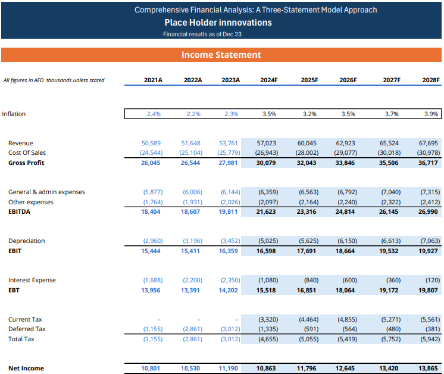
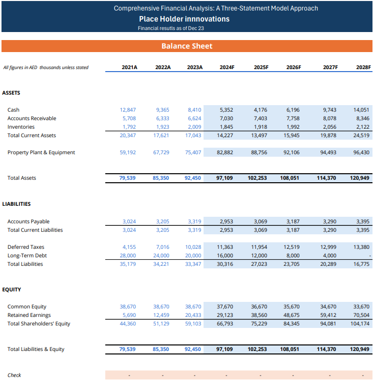
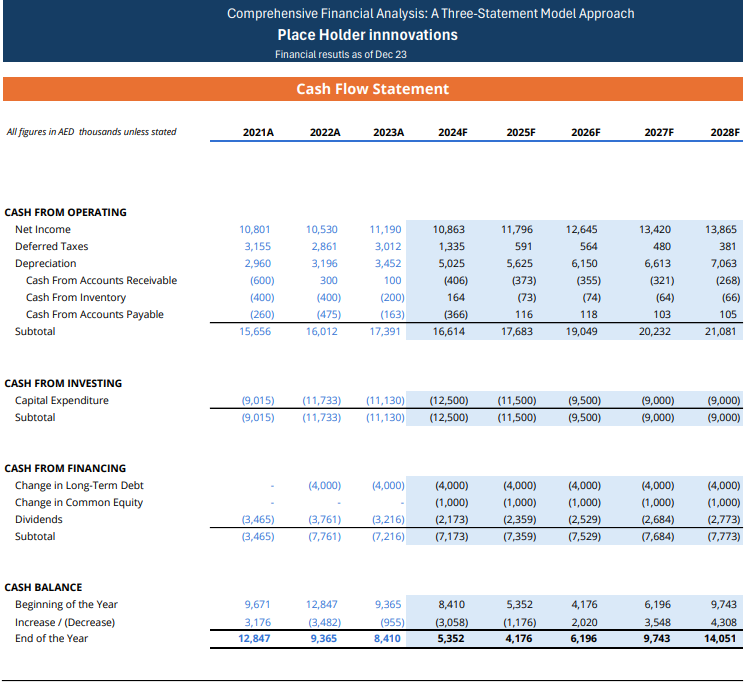

The model
What it looks like
Click any image to view it full size.
Executive dashboard

Income statement

Balance sheet

Cash flow statement

An integrated five-year financial model in Excel linking the income statement, balance sheet and cash flow statement, with scenario analysis, sensitivity tables and supporting DCF valuation schedules to assess business performance and enterprise value under different assumptions.
A five-year projection answers the questions boards and lenders ask: how fast can the business grow, what will it earn, and will it generate enough cash to fund itself and repay its debt?
Click any image to view it full size.



"Placeholder Innovations" is a fictional company. Download the model to explore the formulas and assumptions yourself.